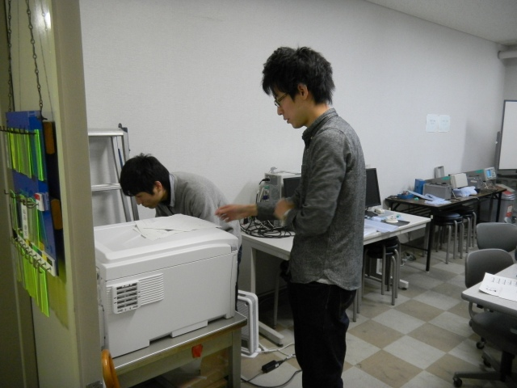
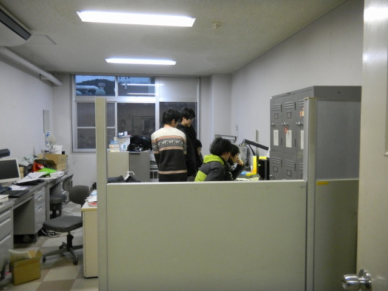

| ・卒業論文提出 (H24.02.15) | |||
前日に準備が終わっている人も居たので昨年よりは落着いた日でした。今年はT永くん、M下くん、I上くんが同時で、I垣くんの順でした。撮影はK岡先輩で、高橋くんカメラを使用です。 |
|||
|
助教の人からの指摘事項リストを再確認 |
気になるところを差し替え | ||
|
I上チェックが！ |
I上くん監視中 | ||
|
まだ書いてるし |

よし、良いだろう！ | ||
|
卒論出す前にゴミを出そう |
提出書類の最終チェック | ||
|
まず3人提出へ |
並んでるね | ||
|
I垣くんの製本を手伝うK岡先輩 |

なんとか無事全員提出 | ||